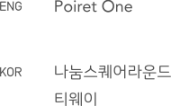

ABOUT
블루보틀은
완벽한 커피를 위한 느림의 미학이라는
아이덴티티를 가지고 있습니다.
느리더라도 최고로 맛있는 커피를 만들겠다는
철학을 가진 스페셜 티 커피 브랜드 입니다.
CONCEPT
기존 사이트의 단순하고 정적인 디자인 화면을
사용자의 입장에서 필요한 정보들을
한눈에 볼 수 있도록 리디자인 하였습니다.
KEYWORD
- Simple
- Value
- Craftsman
- 깔끔한 레이아웃으로
제품 강조 - 브랜드의
가치를 표현 - 브랜드의
장신정신을 표현
COLOR
블루보틀의 상징 색인 터키 블루를 사용하여
브랜드 고유의 색을 유지하려 하였습니다.
또한 다양한 호버효과의 컬러도 동일한 컬러를
사용함으로써 통일감을 주었습니다.
FONT
Main
메뉴단에
다양한 호버효과를 주고
편집한 영상을 넣어
시각적인 효과를
더했습니다.
History Page
블루보틀의 탄생 스토리를
블루보틀의 창업자인
제임스 프리먼 사진과
배치하였습니다.
Blue coffee
블루보틀의 대표적인
커피를 볼 수 있도록
디자인했습니다.
Brew Guides
실제 매장에서 사용하는
커피 추출방법을
확인할 수 있습니다.
Store
국내 블루보틀 매장 정보를
슬라이더로 볼 수 있도록
디자인 하였습니다.
페이지네이션
오른쪽의 숫자는
총 매장에 숫자이며
왼쪽에 숫자는
현재 보고있는 페이지의
수를 나타냅니다.
Sbscribe
블루보틀 관련
다양한 정보를
받아볼 수 있도록
e-mail 주소 입력창을
배치하였습니다.